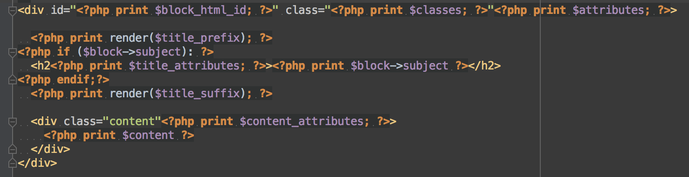
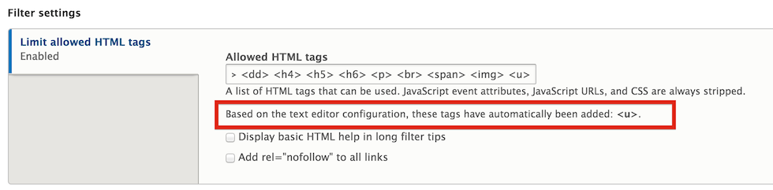

Security, as we all know, is very hard to bolt on to any software or product after the fact. Building it into the core of the code avoids mistakes and thus the upcoming release of Drupal 8 tries to build in more security by default while still usable for developers and site builders. This list of ten improvements here is not exhaustive - some are just a line or two to handle an edge case, and there are others I may have overlooked. I've contributed to a number of these improvements, but they reflect overall the community consensus as well as reactions to problems that required security releases Drupal core or contributed modules in the past. For each point I've tried to include a link or two such as the Drupal core change record, a documentation page, or a presentation that provides more information. Some of these may also be possible to back-port to Drupal 7, to take benefit you even soon. A "7.x back-port" link indicates that.
For context on why these improvements are important, I looked at past security advisories (SAs) as well as considering the kind of questions we get here at Acquia from companies considering adopting Drupal. In terms of past SAs, cross-site scripting (XSS) is the most commonly found vulnerability in Drupal core and contributed modules and themes.
This is probably first on the list of anyone you ask about Drupal 8 security. This is also one of the most popular features with themers.
One security gain from this is that it enforces much stricter separation of business logic and presentation – this makes it easier to validate 3rd party themes or delegate pure presentation work. You can't run SQL queries or access the Drupal API from Twig.
In addition Drupal 8 enables Twig auto-escaping, which means that any string that has not specifically flagged as safe will be escaped using the PHP function htmlspecialchars() (e.g. the same as Drupal 7 check_plain()). Auto-escaping of variables will prevent many XSS vulnerabilities that are accidentally introduced in custom site themes and custom and contributed modules. That fact is why I ranked this as number one. XSS is the most frequent security vulnerability found in Drupal code. We don't have a lot of hard data, but based on past site audits we generally assume that 90% of site-specific vulnerabilities are in the custom theme.
To see why themers love Twig, compare the Drupal 7 block.tpl.php code to the Drupal 8 Twig version.
Drupal 7 block.tpl.php  Drupal 8 block.html.twig
OK, maybe this should have been number one. Drupal 8 does not include the PHP input format in core. In addition to encouraging best practices (managing code in a revision control system like git), this means that Drupal no longer makes it trivial to escalate an administrator login to being able to execute arbitrary PHP code or shell commands on the server.
For Drupal 7, importing something like a View required importing executable PHP code, and for certain custom block visibility settings, etc. you would need to enter a PHP snippet. These uses of evaluated PHP (exposing possible code execution vulnerabilities) are all gone – see the next point about configuration management.
Now that we have covered the top two, the rest of the ten are in rather arbitrary order.
The Configuration Management Initiative (CMI) transformed how Drupal 8 manages things that would have been represented in Drupal 7 as things like Drupal variables or ctools exportables (e.g. exported Views).
CMI uses YAML as the export and import format and the YAML files can be managed together with your code and checked into a revision control system (like git).
Why is this a security enhancement? Well, in addition to removing the use of PHP code as an import format (and hence possible code execution vulnerability), tracking configuration in code makes I much easier to track an auditable history of configuration changes that will make it easier to consider Drupal suitable for enterprises that need more controls in place. In addition, configuration can be fully tested in development and then exactly replicated to production at the same time as any corresponding code changes (avoid mistakes from manual configuration). Finally, it possible to block configuration changes in production to force deployment of changes as code.
While the integration of a WYSIWYG editor with Drupal core is a big usability improvement, extra care was taken that to mitigate poor practices that such an editor encouraged in past Drupal versions. In particular, users with access to the editor were often granted access to the full html text format, which effectively allowed them to execute XSS attacks on any other site user.
To encourage the best practice of only allowing the use of the filtered HTML format, the Drupal 8 editor configuration is integrated with the corresponding text filter, to when a button is added to the active configuration, the corresponding HTML tag is added to the allowed list for the text filter.
Drag a new button from the available to enabled section in the editor configuration.
The corresponding HTML tag (the U tag) is added to the allowed list. 
An additional security improvement is that the core text filtering supports limiting users to using only images local to the site which helps prevent cross-site request forgery (CSRF) and other attacks or abuses using images.
There are three distinct improvements to session and session cookie handling.
First, the security of session Ids has been greatly improved against exposure via database backups or SQL injection (7.x back-port ). Previously in Drupal, the session ID is stored and checked directly against the incoming session cookie from the browser. The risk from this is that the value from the database can be used to populate the cookie in the browser and thus assume the session and identity of any user who has a valid session in the database. In Drupal 8, the ID is hashed before storage which prevents the database value from being used to assume a user's session, but the incoming value from the value is simply hashed in order to verify the value.
Next, mixed-mode SSL session support was added to core to support sites that, for example, used contributed modules to serve the login page over SSL while other pages unencrypted. You will have to replace the session handling service if you really need this. This encourages serving your entire site over SSL (which is also a search engine ranking boost).
The final change is that the leading “www.” is no longer stripped from the session cookie domain since that causes the session cookie to be sent to all subdomains (7.x back-port)
Links (GET requests) that cause some destructive action or configuration change need to be protected from CSRF, usually with a user-specific token in the query string that is checked before carrying out the action.
This change improves the developer experience and security by automating a process frequently forgotten or done incorrectly in contributed modules. In addition, centralizing the code makes it easier to audit and provide test coverage.
Drupal 8 makes it easy. A developer merely needs to specify that a route (a system path in Drupal 7 terms) requires a CSRF token. Here is an example of the YAML route definition for a protected link in Drupal 8 entity.
entity.shortcut.link_delete_inline:
path: '/admin/config/user-interface/shortcut/link/{shortcut}/delete-inline'
defaults:
_controller: 'Drupal\shortcut\Controller\ShortcutController::deleteShortcutLinkInline'
requirements:
_entity_access: 'shortcut.delete'
_csrf_token: 'TRUE'
Only the one line in the requirements: section needs to be added to protect shortcut deletion from CSRF.
Many Drupal sites will respond to a page request using a arbitrary host header sent to the correct IP address. This can lead to cache poisoning, bogus site emails, bogus password recovery links, and other problems with security implications.
For earlier versions of Drupal, it can be a challenge to correctly configure the webserver for a single site that uses sites/default as its site directory to prevent these host header spoofing attacks. Drupal 8 ships with a simple facility to configure expected host patterns in settings.php and warns you in the site status report if it's not configured.
If available, Drupal 8 will set a flag that limits PHP to sending only a single SQL statement at a time when using MySQL. This change would have reduced the severity of SA-CORE-2014-005 (an SQL injection vulnerability that was easily exploited by anonymous users). (7.x back-port) . Getting this change into Drupal 8 meant I first had to to contribute a small upstream change to the PHP language itself, to the PDO MySQL library that is available in PHP versions 5.5.21 or 5.6.5 and greater.
There is also a patch in progress to try to enforce this protection regardless of which specific database driver is being used.
A small change, but Drupal 8 sends the X-Frame-Options: SAMEORIGIN header in all responses by default. This header is respected by most browsers and prevents the site from being served inside an iframe on another domain. This blocks so-called click-jacking attacks (e.g. forms or links on the site being presented in a disguised fashion on an attacker's site inside an iframe), as well as blocking the unauthorized re-use of site content via iframes. (7.x back-port).
Support for inline JavaScript was removed from the #attached property in the Drupal render API. In addition, the Drupal javascript settings variables are now added to the page as JSON data and loaded into a variable instead of being rendered as inline JavaScript. This was the last use of inline JavaScript by Drupal 8 core, and means that site builders can much more easily enable a strict content security policy (CSP) – a new web standard for communicating per-site restrictions to browsers and mitigating XSS and other vulnerabilities.
A final note of caution. The substantial code reorganization and refactoring in Drupal 8 as well as the dependence on third party PHP components does presents a certain added risk. The code reorganization may have introduced bugs that were missed by the existing core tests. The third party components themselves may have have security vulnerabilities that affect Drupal and, at the least, we need to track and stay up to date with them and fix our integration for any corresponding API changes. In order to try to mitigate the risk, the Drupal Association been conducting the first Drupal security bug bounty that has been run for any version of Drupal core. This has uncovered several security bugs and means they will be fixed before Drupal 8 is released.
I am excited that we've added more “security by default” to Drupal 8, and I hope you download and try it out so you are ready to start using it for new projects as soon as it's released.